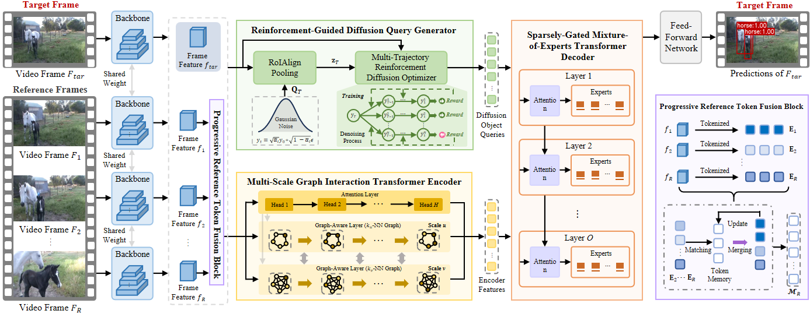
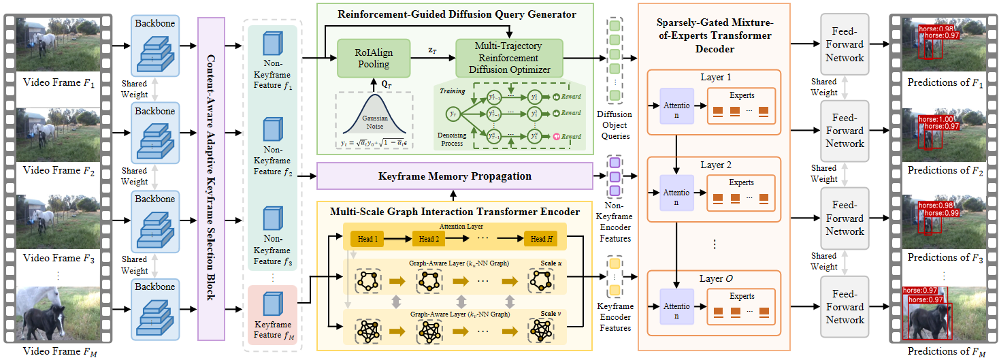

M2TDiff extends our previous research on video object detection, building upon two recent works published at AAAI 2025 and AAAI 2026.
Our AAAI 2025 work explores transformer and graph-based feature interaction for video object detection.
Our AAAI 2026 work introduces diffusion-based object query modeling with multiscale-aware transformer representations.
Video object detection is a pivotal yet challenging task in computer vision. In recent years, DETR-based methods have gained prominence in this domain owing to their powerful global modeling capability. However, these methods are usually confronted with three crucial limitations: frame-agnostic object query initialization, scale-agnostic attention mechanism and heterogeneity-agnostic feature transformation, which hinder their capability to capture dynamic appearance variations and model cross-frame temporal dependencies. To alleviate these limitations, we propose a novel Multi-scale MoE-enhanced Transformer Diffusion (M2TDiff) network for video object detection, including three core technical improvements over existing methods. First, we introduce a reinforcement-guided diffusion query generator, which models the object query distribution through an iterative diffusion process conditioned on input frames and optimized using a multi-trajectory reinforcement learning strategy, generating adaptive and content-aware object queries. Second, we design a multi-scale graph interaction transformer encoder, which combines multi-head attention mechanisms with multi-scale dynamic graph convolutions to learn scale-aware feature representations while jointly modeling local and global contextual dependencies. Third, we develop a sparsely-gated mixture-of-experts transformer decoder, which dynamically routes heterogeneous object queries to specialized experts through sparse gating, enabling query-specific representation learning. Furthermore, we present two variants of M2TDiff, termed M2TDiff++ and M2TDiff-Fast, which further improve detection accuracy by exploring more diverse spatial-temporal cues and accelerate inference speed via an optimized keyframe/non-keyframe processing strategy. We conduct experiments on the ImageNet VID and VisDrone-VID datasets and the results show that M2TDiff achieves state-of-the-art performance with a favorable accuracy-efficiency trade-off, while its two variants further extend this frontier toward higher accuracy and faster inference, respectively. Particularly, on the ImageNet VID dataset, M2TDiff achieves 89.2% mAP at 45.2 FPS on a single 5090 GPU, M2TDiff++ reaches 94.1% mAP, and M2TDiff-Fast obtains 88.5% mAP at 53.8 FPS.
Overview. M2TDiff is a multi-scale MoE-enhanced transformer diffusion network designed for video object detection. The framework progressively improves object query generation, multi-scale feature interaction, and query-specific representation learning.
Reinforcement-Guided Diffusion Query Generator. We introduce a diffusion-based query generation mechanism that produces adaptive and content-aware object queries conditioned on input frames. A multi-trajectory reinforcement learning strategy further guides the diffusion process.
Multi-Scale Graph Interaction Transformer Encoder. The encoder integrates multi-head attention with multi-scale dynamic graph convolution to jointly capture local and global contextual dependencies.
Sparsely-Gated Mixture-of-Experts Decoder. The decoder dynamically routes heterogeneous object queries to specialized experts, enabling query-specific feature transformation.

M2TDiff++ further improves detection accuracy by exploring more diverse spatial-temporal cues and enhancing object query generation through extended temporal information aggregation.

M2TDiff-Fast introduces an optimized keyframe/non-keyframe processing strategy to reduce computational cost while maintaining competitive detection performance.
Please follow the steps below to train M2TDiff.
# Clone the repository
git clone https://github.com/gold-research/M2TDiff.git
cd M2TDiff
# Create environment
conda create -n m2tdiff python=3.9
conda activate m2tdiff
# Install dependencies
pip install -r requirements.txt
# Train M2TDiff
python train.py \
--config configs/m2tdiff.yaml
To evaluate a trained M2TDiff model, use the following command.
# Evaluate M2TDiff
python test.py \
--config configs/m2tdiff.yaml \
--checkpoint path/to/checkpoint.pth
For video demonstration, you can run:
# Run video demo
python demo.py \
--config configs/m2tdiff.yaml \
--input path/to/video
If you find M2TDiff useful for your research, please consider citing our works:
@inproceedings{tgbformer2025,
title = {TGBFormer: Transformer-GraphFormer Blender Network
for Video Object Detection},
author = {Your Name and Co-Authors},
booktitle = {Proceedings of the AAAI Conference
on Artificial Intelligence},
year = {2025}
}
@inproceedings{mstdiff2026,
title = {MSTDiff: Multiscale-Aware Transformer Diffusion
Network for Video Object Detection},
author = {Your Name and Co-Authors},
booktitle = {Proceedings of the AAAI Conference
on Artificial Intelligence},
year = {2026}
}
@inproceedings{m2tdiff,
title = {M2TDiff: Multi-Scale MoE-Enhanced Transformer
Diffusion Network for Video Object Detection},
author = {Your Name and Co-Authors},
booktitle = {Conference},
year = {2026}
}